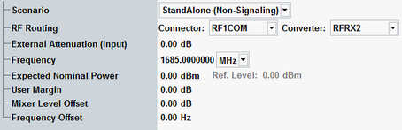

RF Settings Tab
The "RF Settings" tab is shared with other GPRF measurements, see "Signal Routing and Analyzer Settings".

RF settings tab for GPRF measurements
The "RF Settings" tab is shared with other GPRF measurements, see "Signal Routing and Analyzer Settings".
